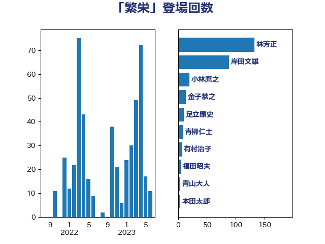

単語「繁栄」

| 林芳正 | 自由民主党 | 132 回 |
| 岸田文雄 | 自由民主党 | 88 回 |
| 小林鷹之 | 自由民主党 | 20 回 |
| 金子恭之 | 自由民主党 | 14 回 |
| 足立康史 | 日本維新の会 | 10 回 |
| 青柳仁士 | 日本維新の会 | 8 回 |
| 有村治子 | 自由民主党 | 7 回 |
| 福田昭夫 | 立憲民主党 | 5 回 |
| 青山大人 | 立憲民主党 | 4 回 |
| 本田太郎 | 自由民主党 | 4 回 |
| 堀井巌 | 自由民主党 | 4 回 |
| 高良鉄美 | 無所属 | 3 回 |
| 辻清人 | 自由民主党 | 3 回 |
| 浜田靖一 | 自由民主党 | 3 回 |
| 浅野哲 | 国民民主党 | 3 回 |
| 松川るい | 自由民主党 | 3 回 |
| 松原仁 | 立憲民主党 | 3 回 |
| 本庄知史 | 立憲民主党 | 3 回 |
| 新垣邦男 | 立憲民主党 | 3 回 |
| 山口晋 | 自由民主党 | 3 回 |
| 高橋光男 | 公明党 | 2 回 |
| 馬場伸幸 | 日本維新の会 | 2 回 |
| 鈴木貴子 | 自由民主党 | 2 回 |
| 輿水恵一 | 公明党 | 2 回 |
| 西村康稔 | 自由民主党 | 2 回 |
| 葉梨康弘 | 自由民主党 | 2 回 |
| 芳賀道也 | 国民民主党 | 2 回 |
| 細田博之 | 自由民主党 | 2 回 |
| 紙智子 | 日本共産党 | 2 回 |
| 石井啓一 | 公明党 | 2 回 |
| 田畑裕明 | 自由民主党 | 2 回 |
| 田嶋要 | 立憲民主党 | 2 回 |
| 甘利明 | 自由民主党 | 2 回 |
| 櫻井周 | 立憲民主党 | 2 回 |
| 末松信介 | 自由民主党 | 2 回 |
| 平木大作 | 公明党 | 2 回 |
| 工藤彰三 | 自由民主党 | 2 回 |
| 山田賢司 | 自由民主党 | 2 回 |
| 山口壯 | 自由民主党 | 2 回 |
| 山口俊一 | 自由民主党 | 2 回 |
| 小田原潔 | 自由民主党 | 2 回 |
| 室井邦彦 | 日本維新の会 | 2 回 |
| 大島敦 | 立憲民主党 | 2 回 |
| 吉田宣弘 | 公明党 | 2 回 |
| 佐藤正久 | 自由民主党 | 2 回 |
| 中川郁子 | 自由民主党 | 2 回 |
| 鰐淵洋子 | 公明党 | 1 回 |
| 高木啓 | 自由民主党 | 1 回 |
| 青木愛 | 立憲民主党 | 1 回 |
| 青木一彦 | 自由民主党 | 1 回 |
| 阿部司 | 日本維新の会 | 1 回 |
| 関口昌一 | 自由民主党 | 1 回 |
| 鈴木義弘 | 国民民主党 | 1 回 |
| 金村龍那 | 日本維新の会 | 1 回 |
| 野田聖子 | 自由民主党 | 1 回 |
| 谷田川元 | 立憲民主党 | 1 回 |
| 篠原孝 | 立憲民主党 | 1 回 |
| 笠井亮 | 日本共産党 | 1 回 |
| 竹内譲 | 公明党 | 1 回 |
| 稲田朋美 | 自由民主党 | 1 回 |
| 稲津久 | 公明党 | 1 回 |
| 稲富修二 | 立憲民主党 | 1 回 |
| 秋本真利 | 無所属 | 1 回 |
| 石川博崇 | 公明党 | 1 回 |
| 石井苗子 | 日本維新の会 | 1 回 |
| 盛山正仁 | 自由民主党 | 1 回 |
| 田村貴昭 | 日本共産党 | 1 回 |
| 片山大介 | 日本維新の会 | 1 回 |
| 熊田裕通 | 自由民主党 | 1 回 |
| 源馬謙太郎 | 立憲民主党 | 1 回 |
| 湯原俊二 | 立憲民主党 | 1 回 |
| 渡辺博道 | 自由民主党 | 1 回 |
| 泉健太 | 立憲民主党 | 1 回 |
| 沢田良 | 日本維新の会 | 1 回 |
| 武井俊輔 | 自由民主党 | 1 回 |
| 横山信一 | 公明党 | 1 回 |
| 枝野幸男 | 立憲民主党 | 1 回 |
| 東徹 | 日本維新の会 | 1 回 |
| 杉田水脈 | 自由民主党 | 1 回 |
| 杉本和巳 | 日本維新の会 | 1 回 |
| 杉久武 | 公明党 | 1 回 |
| 木村次郎 | 自由民主党 | 1 回 |
| 新藤義孝 | 自由民主党 | 1 回 |
| 斉藤鉄夫 | 公明党 | 1 回 |
| 島尻安伊子 | 自由民主党 | 1 回 |
| 岩谷良平 | 日本維新の会 | 1 回 |
| 岩屋毅 | 自由民主党 | 1 回 |
| 山本博司 | 公明党 | 1 回 |
| 小野泰輔 | 日本維新の会 | 1 回 |
| 小熊慎司 | 立憲民主党 | 1 回 |
| 大塚耕平 | 国民民主党 | 1 回 |
| 堂込麻紀子 | 無所属 | 1 回 |
| 吉良州司 | 無所属 | 1 回 |
| 勝目康 | 自由民主党 | 1 回 |
| 加藤勝信 | 自由民主党 | 1 回 |
| 加田裕之 | 自由民主党 | 1 回 |
| 井上哲士 | 日本共産党 | 1 回 |
| 上田清司 | 国民民主党 | 1 回 |
| 上川陽子 | 自由民主党 | 1 回 |
| 三宅伸吾 | 自由民主党 | 1 回 |
| おおつき紅葉 | 立憲民主党 | 1 回 |